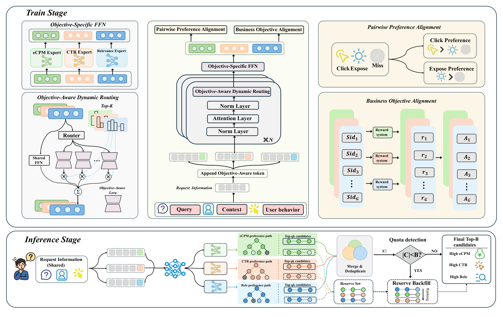
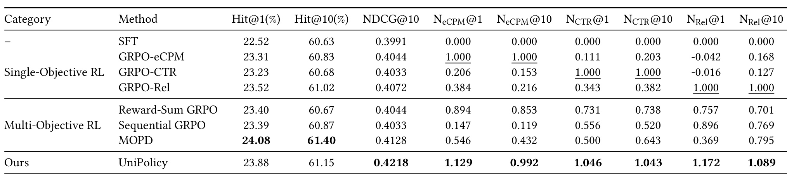
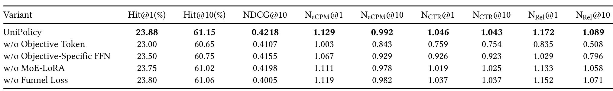
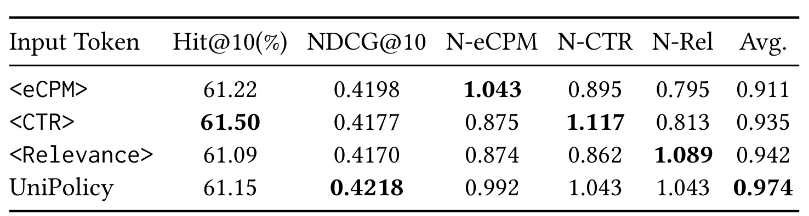
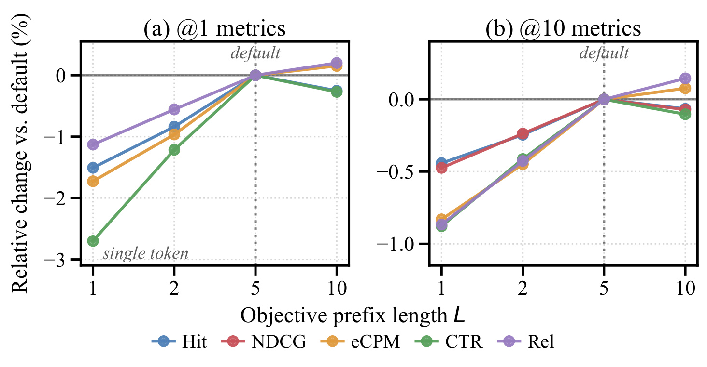
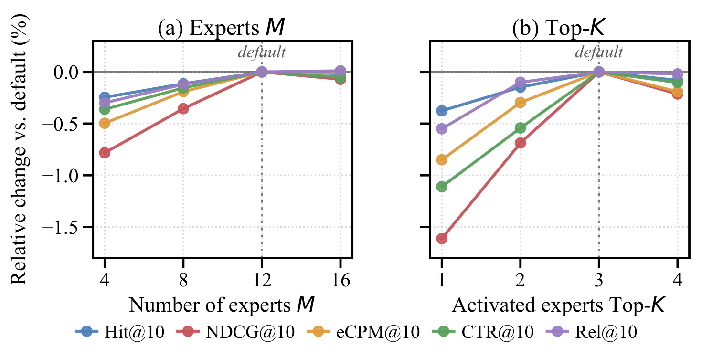
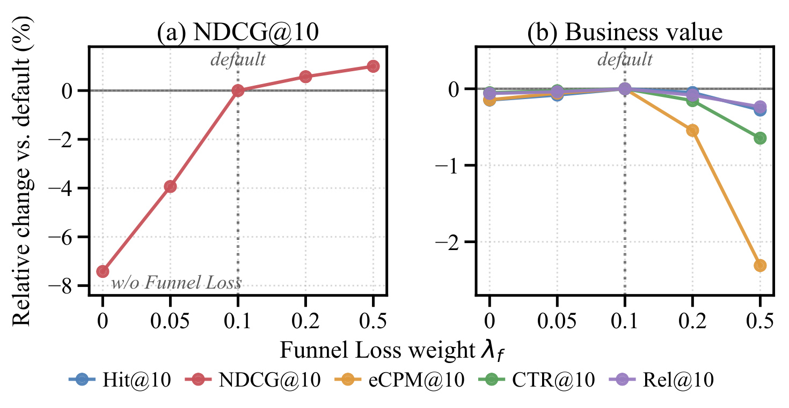
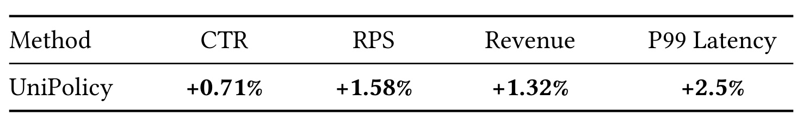
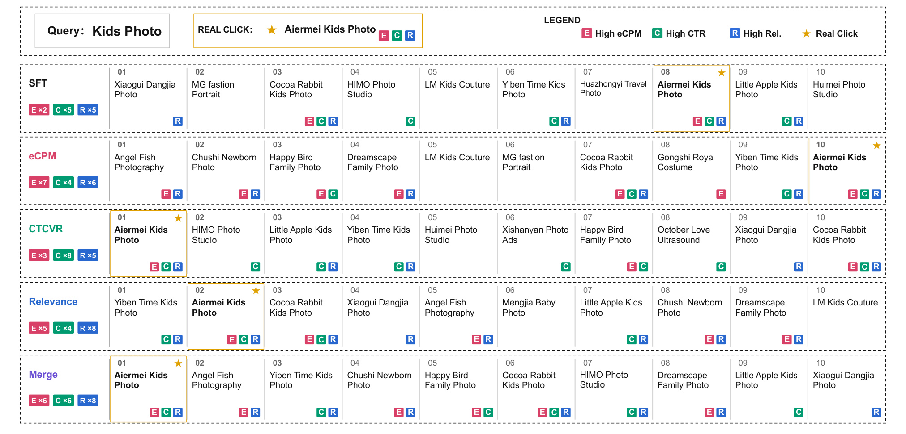

UniPolicy：面向生成式搜索广告的目标专属统一策略
论文： UniPolicy: Unified Objective-Specific Policies for Generative Search Advertising
作者与机构： Kun Yao、Yuhang Zhou、Yichi Zhang、Zeliang Tong、Shengri Xue、Haitao Wang、Siyu Lu、Qianlong Xie、Xingxing Wang；PDF 首页署名美团，北京。
来源与时间： arXiv:2609.20630，v1 首次提交 2026-09-17 16:17 UTC（北京时间 9 月 18 日 00:17）；精读日期 2026-09-21。
公开状态： 本轮未核验到独立代码、模型或公开数据入口。PDF 中 Conference’17、虚构样式 ISBN 和 DOI 是排版模板残留，不能据此认定会议录用或 2017 年发表。下文页码指 13 页原始 PDF。
1. 背景和问题
搜索广告必须同时兼顾相关性、点击倾向和商业价值；把这些异构目标压入同一奖励与策略空间，会使它们争夺共享参数的更新方向，而仅依赖点击正例又遗漏了曝光未点击候选之间的相对偏好。
理解它首先要明确 UniPolicy 所在的位置：它是搜索广告的生成式召回与候选生成方法，输入包含搜索查询、请求上下文和用户行为，输出是广告的离散语义标识，而不是直接产生广告文案。广告系统后面仍可能存在粗排、精排和拍卖，因此生成列表中的商业价值分数并不等于最终已经发生的收入。召回阶段的关键责任是让后续系统有机会看到不同意义上的好候选。早期如果仅按一种偏好筛掉某个广告，后面的强排序模型也无法把它补回来，这使业务目标前移成为必要但并不容易的设计。
传统生成式召回通常先把广告编码成固定长度的 Semantic ID，利用历史点击完成下一 token 预测。这样的监督擅长复现已观察到的行为，却不能保证高生成概率的广告同时具备更高收益、点击概率或语义相关度。历史点击还受广告位置、既有召回通道、竞价规则和曝光机会影响。生成模型因此面对两个不同层次的问题：一是应该根据什么反馈调整候选偏好，二是当多种反馈不完全一致时，如何避免更新互相抵消。论文把后训练中的强化学习用于第一层，又用条件化策略与参数分解处理第二层；只记住“使用 GRPO”会漏掉它真正关心的策略表达问题。
单独优化 eCPM 的做法有清晰的方向，训练时不需要讨论不同奖励的权重，但高商业价值候选未必是最符合当前查询的候选。另一种常见方案把点击、相关性和收入奖励加权，得到统一优势后更新一条策略。这种方案部署简单，却可能让梯度幅度较大、学习更容易或者当前奖励增益更强的目标主导模型。即使把奖励先标准化，各目标的最优生成分布也可能不同：同一个有限候选列表不一定能在三个维度同时保留所有极端偏好。权重选择与策略容量是相关但不同的困难，前者调得更精细，不代表后者自然消失。
UniPolicy 的立场是让同一个模型保留三条可独立调用的条件策略。查询和用户信息仍被共享骨干理解，但输入的目标前缀决定当前要追求 eCPM、CTR 还是 Relevance。模型内部再分出可动态共享的低秩分支和完全专属的顶层残差。这样的共享层次比训练三套完整模型更节省公共计算，又比仅给一个目标标签更明确地提供了差异化表达空间。它不是宣称所有梯度冲突都被消除：共享骨干仍然接收多目标梯度，稀疏分支也允许重叠，论文追求的是减少不必要的直接竞争，同时保留有用的跨目标知识迁移。
另一个问题来自监督样本的组织。点击广告是一个强正反馈，但曝光而未点击并不等于从未被系统选中的广告。作者采用 Click、Exposure、Miss 三层漏斗，把点击与曝光、曝光与未曝光、点击与未曝光形成成对关系。这里的 Exposure 指曝光但未点击，Miss 指未曝光候选。其信息增量在于，模型不仅学习哪个广告曾经被点击，也学习多个候选之间应拉开多大的序列分数差。然而，这个次序是业务日志构造的代理监督，并不是用户在均等曝光机会下给出的完整偏好。没有看到某广告可能只是因为它没进入旧系统的候选集，不能直接解释为用户不喜欢它。
推理阶段的问题同样具体。单策略 beam search 在大候选预算下，可能必须把自身偏好中得分越来越低的尾部候选填满名额；与此同时，另一目标策略中很有潜力的候选根本没有被生成。UniPolicy 因此把总名额拆给多个策略，分别生成后合并去重，缺额从末级预留候选回填。这把“偏好选择”从训练时固定的奖励权重部分移到了请求时可调整的候选配额。但配额改变以后，最终列表上的真实业务指标如何变化仍要实验验证，它不是一套已经证明完备的 Pareto 前沿求解器，也不自动保证任何配额都能满足线上体验约束。
这篇工作值得关注的原因，是它把三个通常分开讨论的问题放在同一条生成链路里：参数里保留多种偏好，行为监督改善候选之间的排序，推理预算允许这些偏好共同贡献候选。证据也因此必须分别看待。离线 NDCG 可以检验已点击候选位置是否更靠前；归一化业务分数可以衡量候选集合的相对商业取向；在线实验才能观察真实点击和收入。三类指标之间并不存在无需验证的等价关系。特别是论文主表的 Hit 指标没有全面超过蒸馏基线，在线服务也增加了尾延迟，合理评价应当围绕具体权衡而不是“统一模型全面领先”。
从复现条件看，论文使用真实工业广告日志，包含数亿样本和数百万广告，但没有提供可下载的等价数据集。奖励的原始尺度、样本细节与生产环境均会影响训练结果。我们可以从公开材料核对其机制和表格，却不能仅凭这些数字保证迁移到另一广告业务后的绝对收益。尤其是相关性奖励的来源、商业分数的校准质量、曝光策略的历史偏差，会决定三个目标到底是在互补还是在相互放大已有偏见。这些问题也是后文审阅消融、线上表和附录矛盾时的共同边界。
此外，论文把任务放在搜索广告而非无查询的信息流中，查询相关性具有明确的语义约束。高点击候选如果偏离搜索意图，短期互动也不一定意味着用户体验改善。这使相关性策略具有独立价值，同时要求评测区分导航型、泛需求型与商业意图强弱不同的查询。当前公开结果以总体均值为主，尚未回答这些请求类型是否都获得一致收益。
2. 方法
2.1 目标条件化与分层参数解耦
原文第 4.2 节先定义目标前缀，再说明稀疏 MoE-LoRA 和顶层专属 FFN。广告 SID 长度实验中为三，RQ-VAE 将内容表征量化为从粗到细的离散编码，完整序列对应广告。对于同一请求，不同目标的五个可学习前缀 token 被接在共享请求信息之后，并参与后续自回归计算。这里的“前缀”是相对生成的 SID 而言，不要求在原始查询文本前面。条件策略的基本形式为：
符号解释：$x$ 是请求信息，$c_k$ 是目标 $k$ 的可学习 token 序列，$y_t$ 是第 $t$ 个 SID token，$T$ 为 SID 长度，$\theta$ 表示统一模型参数。这个分解对应原文式（5）与（6）；改变 $c_k$ 会沿整个生成路径改变隐状态，而非只在输出后重加权。

Figure 1 的中央先把查询、上下文和用户行为送入共享请求编码，再接上三种颜色对应的目标前缀。左侧放大图展示两级差异化能力：中间层路由从多个低秩分支中选取部分分支，顶端则选择该目标专属的 FFN。右上角并不是第四条策略，而是对所有目标都可施加的行为漏斗辅助监督；右下角则明确画出每个目标自己的候选、奖励和组相对优势。读图时必须把共享模型和共享奖励区分开：参数可以联合更新，但三个业务维度没有先被揉成一个标量再计算同一组优势。这个结构允许 CTR 策略从自己的候选中发现相对较优的样本，而不必等待它们同时得到收入奖励认可。
图的下半部分把训练学到的条件策略真正用于在线候选生成。请求侧计算只有一份，三个目标路径独立生成，各自产生主候选和预留集合，合并后检查去重数量，再决定是否回填。因此图中的并行分支不是三套完全独立的服务，预留候选也不是再运行一次完整生成。图上最后标注高收入、高点击和高相关，只能理解为希望获得的候选构成；并未证明每个输出广告都在三个维度超过阈值。更需要留意的是，图中共享缓存仅覆盖目标分叉前的信息，目标前缀之后的隐藏状态和解码缓存有条件差异，不能据此说所有解码计算均共享。架构图支持计算复用的设计解释，实际时延收益仍应由线上尾延迟与资源测试决定。对于实现，最重要的接口是目标标识如何同时驱动前缀、路由和顶层 FFN；若三处标识错位，模型虽然能生成 SID，却失去可解释的目标策略语义。
稀疏分支对 FFN 的 gate、up、down 三种投影均提供低秩残差。每层默认十二个分支，路由器根据目标条件隐状态选取三个，并对选中的分数做带温度归一化，再将加权残差拼接后经融合矩阵加入对应投影。不能把该机制简化成“每个业务固定一个专家”；分支选择还依赖请求内容，同一个目标可能在不同上下文激活不同组合。
符号解释：$l$ 为层，$i$ 为分支，$p$ 为投影类型，$r$ 为低秩维度，$\alpha_L$ 为缩放参数，$A,B$ 为该分支独立低秩矩阵；gate 和 up 的输入 $v$ 为注意力更新后的隐藏向量，down 的输入为门控中间激活。该式来自原文式（7），其输出是增量而非替换整个共享 FFN。
符号解释：$\mathcal L_{moe}$ 是适配层集合，$M$ 为分支数，$P$ 是平均路由概率，$F$ 是 Top-3 选择频率，$n$ 为 token 位置，$i_p,i_q$ 是已激活分支。式（8）与（9）分别限制少数分支垄断和残差方向冗余；此处求和中的 $p,q$ 是选中分支的序号，区别于上一式的投影标签。附录说明负载损失对骨干隐状态停止梯度，多样性损失只更新激活分支的低秩参数。
顶层专属 FFN 则把最终表征作目标专属残差变换，每次前向只激活一个专属 FFN，之后仍用同一 SID 输出矩阵。这意味着词表与广告标识空间保持统一，目标差异主要体现在表征路径，便于后续合并同一广告。
符号解释：$h_t^k$ 为最后一层目标条件隐状态，$\Delta h_t^k$ 为目标专属 FFN 的残差，$W_o$ 为共享输出矩阵。式（10）与（11）的右侧代表下一个 token 的分布，取其 $y_t$ 分量即目标 token 概率。共享骨干、部分重叠的低秩路径、互不共享的顶层残差构成递进分工，不能仅由专属 FFN 互不共享就推断全部梯度正交。
2.2 多阶段行为偏好与分策略联合训练
第 4.3 节把一条完整 SID 的逐 token 对数概率相加，作为候选序列分数。对 Click–Exposure、Exposure–Miss 和 Click–Miss 三类配对施加带间隔的逻辑损失，跨两层漏斗的点击与未曝光配对使用更大间隔。这种训练会要求点击广告与弱反馈广告拉开排序距离，而不仅仅满足正负方向正确。
符号解释：$S_k$ 为完整序列分数，$\mathcal P_x$ 为请求内采样的行为配对，$y^+$ 与 $y^-$ 为较优、较弱候选，$m$ 为配对间隔；相邻层用 $m_{adj}$，Click–Miss 用更大的 $m_{cross}$。该式合并原文式（12）至（15）；间隔越大，模型需要建立越大的对数概率差，不能把它理解为已校准的真实点击概率差。
强化学习则按业务目标分别采样完整 SID、调用对应奖励并计算组内相对优势，采用裁剪的 GRPO。原文附录明确关闭参考策略 KL 项，系数为零，因此不能沿用通用 GRPO 介绍，误写成本文还依赖 KL 约束防止偏移。独立采样的意义在于每个目标的优势分母、组内均值与候选分布都独立，它并不等同于对同一组样本的三项奖励简单相加。
符号解释：$G$ 为每请求的完整 SID rollout 数，$R$ 为该目标奖励，$\epsilon$ 防止标准差为零，$\rho$ 为新旧策略在相同条件和 token 上的概率比，$\epsilon_c$ 为裁剪范围。式（20）至（22）先在目标内形成优势再更新，而共享参数上的梯度在联合更新前累计。组内标准化只处理相对尺度，不保证奖励模型没有系统偏差。
符号解释：$\mathcal K$ 为三目标集合，四个 $\lambda$ 分别控制 RL、漏斗、负载平衡和分支多样性强度。这是原文式（16）与（17）的合并形式。漏斗损失提供共同的候选辨别先验，独立奖励负责不同业务偏好；文中固定小权重的初衷是避免漏斗监督压过业务目标，但默认值的图文冲突需要另行核对。
Click > Exposure > Miss 是受旧曝光策略影响的代理顺序，不是无偏的用户偏好真值。 如果旧系统只展示高价广告，曝光层就带有竞价选择偏差；让所有策略都继承这一层序，可能进一步压低新广告和长尾供给。论文没有展示反事实曝光校正实验，因而漏斗带来的排序改善应限制在当前日志分布解释。另一个成本是训练：三个策略独立 rollout，计算量会随策略数大致线性增长。共享骨干减少模型冗余，却不抵消采样和奖励调用的实际开销，也不能把推理复用直接当作训练加速证据。
2.3 固定预算下的多策略推理与回填
第 4.4 节先对查询、上下文和用户行为执行共享前向并缓存 KV，再拼装三个目标前缀并行解码。每个目标取得自己的主候选配额，配额允许随业务需求改变，总候选预算保持固定。不同策略的原始概率不可直接当作同一尺度比较，因此作者先对各策略生成集合内的长度归一化对数概率做校准，再取生成该广告的策略中的最大校准分。
符号解释：$\mathcal C_k$ 为策略 $k$ 的候选集合，$T$ 为序列长度，$\operatorname{Norm}$ 为策略内分数归一化；式（18）的最大值允许一个广告凭某个目标的突出偏好进入合并列表。这里的归一化用于推理打分，区别于实验表把 SFT 映射为零的业务指标归一化。论文没有充分公开具体校准实现，不能擅自指定它一定是 z-score 或 min-max。
合并去重后超过预算就保留前若干项；不足预算则使用生成最后一个 SID token 时缓存的合法次优完整序列回填。它复用已有 logits，不额外执行完整前向，但仍有合法性检查、去重、排序与内存开销。回填机制的有效性取决于预留候选数量、不同策略的重叠程度和有效 SID 比例，文中没有给出所有请求均能补齐的详细分布证据。训练时追求可分离策略，推理时又把它们合并，是本文的核心闭环；如果学出的三条策略高度相似，配额机制就只会增加重复计算，而难以扩展候选覆盖。
3. 实验结果
3.1 数据、基线和指标口径
原文第 6 页末至第 7 页描述真实工业广告平台日志，规模为数亿样本、大量用户和数百万广告。样本包含查询、历史行为、用户画像以及点击、曝光和未曝光候选，训练测试按时间切分，目的在于降低未来信息泄漏。公开材料没有给出可复现的精确样本数、具体日期、完整过滤规则和评测请求集合。因此“数亿”应保持量级陈述，不能补成某个精确样本量。默认 SID 长度三，前缀长度五，十二个 LoRA 分支中每次激活三个；骨干为共享 decoder-only 模型。
比较对象包括点击监督 SFT，三个单目标 GRPO，标准化后加权奖励的 Reward-Sum GRPO，按 eCPM、CTR、相关性依次训练的 Sequential GRPO，以及把三名教师蒸馏为统一学生的 MOPD。它们分别检验没有业务对齐、只有单目标、奖励融合、顺序学习和策略蒸馏等路线。论文说明比较使用相同配置，但没有完整报告等训练计算或等超参数搜索预算，因此不能仅按模型结构相同就确认所有方法的资源投入严格等价。
Hit 以请求最近一次点击广告为正例，判断其是否进入前若干候选；NDCG 则对该点击广告的位置施加对数折扣。它们评估的是日志中已知正例的覆盖和位置，不是全部相关广告集合的召回率。业务指标另按对应单目标训练的可达增量归一化：
符号解释：$k$ 是 eCPM、CTR 或相关性维度，$K$ 是截断位置，$s$ 为候选业务原始得分，SFT 为监督基线，Single 为该维度对应单目标 GRPO。原文式（19）使 SFT 为零、相应单目标方法为一；1.129 表示相对两锚点的归一化位置，绝不等于线上 eCPM 提升 12.9%，不同维度也不能自动按真实收益等权相加。
3.2 主结果与归一化口径

Table 1 左侧三列是点击候选质量，右侧六列是三个业务维度在两个截断处的归一化分数。UniPolicy 的 NDCG@10 为 0.4218，高于 MOPD 的 0.4128、Reward-Sum 的 0.4044 和 SFT 的 0.3991。对 MOPD 的绝对差为 0.0090，约为相对 2.18%；这是离线排序指标变化，不是在线点击变化。Hit@1 和 Hit@10 分别为 23.88%、61.15%，均低于 MOPD 的 24.08%、61.40%，对应低 0.20 和 0.25 个百分点。这个组合说明更优的整体折扣排名可以与较低的首位命中、前十覆盖同时存在，不应把较高 NDCG 翻译为所有召回质量都领先。
业务部分的价值在于观察多目标权衡。单目标 eCPM 在对应两列被定义为一，但相关性首位分数是负值；Reward-Sum 更平衡，却没有在任一维度达到全部最佳。Sequential 的相关性相对较强，收入维度明显弱，符合顺序优化可能遗忘早期目标的解释，但表格本身没有直接测量遗忘轨迹。UniPolicy 的 NCTR 两列为 1.046、1.043，NRel 两列为 1.172、1.089，高于对应单目标锚点；NeCPM@1 为 1.129，@10 却为 0.992，略低于单目标的一。因此准确结论是它在多数业务维度上形成更好的综合表现，并在前十收入上接近单目标水平，而非严格支配所有单目标解。
这些数值还缺少置信区间和跨随机种子波动，尤其 0.992 与 1 的小差距不应被过度解释为稳定退化或统计等价。归一化分母如果本身很小，有限原始差异也可能对应较大的归一化变化；未公开原始业务得分使我们无法检验这一点。工程上可以把主表当作“保留专属策略值得比较”的动机，下一步仍要在固定训练预算和固定候选预算下保存原始分数、误差范围以及不同查询分层结果，才能知道收益来自哪里。
主表也没有给出同一广告在三个目标候选中的重叠率，因此无法仅据这些平均分判断候选多样性是否增加。
3.3 组件消融

Table 2 将完整模型与四种移除组件的版本逐行比较，指标与主表相同，因此可以直接观察各组件影响的维度。移除目标 token 后 NDCG 降至 0.4107，前十 NCTR 从 1.043 降至 0.754，前十 NRel 从 1.089 降至 0.508。对业务维度的较大影响支持显式条件信号的作用：没有清楚的目标标识，路由和专属参数缺少一致的前向引导。移除顶层专属 FFN 后 NDCG 为 0.4155，NRel@10 为 0.796，显示仅依赖中间层分支并不能完全保持末端偏好表达。这两项结果与作者提出的层级解耦机制相符。
移除 MoE-LoRA 后 NDCG 为 0.4198，业务列也有较小下降。它说明在当前配置下，稀疏低秩路由提供的是增量贡献，而不是所有效果的唯一来源。移除 Funnel 后 Hit@10 仍有 61.06%，离完整模型的 61.15% 很近，但 NDCG 从 0.4218 降到 0.4005。这组差异尤其重要：漏斗主要把已能进入列表的点击候选向前推，而不是大幅扩展覆盖；其业务列变化相对小，也符合辅助排序先验与业务强化学习分工的解释。两个任务的效果不完全重合，正是保留各自监督项的理由。
消融不能完全完成因果归因。删除参数模块可能改变总参数量、训练难度和有效更新幅度，公开表没有同时给出参数量匹配的替代结构，也没有报告各目标之间的梯度夹角或路由重叠统计。因此“缓解梯度竞争”目前主要由机制设计和性能分解间接支持，不能说表格直接证明了冲突量下降多少。若复现实验成本有限，可先比较目标前缀和专属 FFN，再评估 MoE-LoRA 的收益能否覆盖其服务复杂度；同时单独保留漏斗消融，避免把排序提升误记到稀疏路由名下。
此外，组件删除的收益不宜直接相加，因为前缀、路由和专属残差之间存在条件依赖，组合效果并不必然线性。
3.4 目标可控性与表内矛盾

Table 3 固定前十截断，对三个前缀独立推理以及混合推理作比较。收入前缀对应的 N-eCPM 为 1.043，CTR 前缀对应 N-CTR 为 1.117，相关性前缀对应 N-Rel 为 1.089，在相应单前缀比较中均体现清晰的偏向。CTR 前缀 Hit@10 为 61.50%，也高于混合策略的 61.15%；混合策略 NDCG 为 0.4218，高于三个单前缀结果。这说明它确实学到了可调用的不同候选分布，而不是给同一分布换名字。与此同时，混合过程保留综合偏好并不保证各维度都保留专属策略最强值。
该表存在未解决的内部数值不一致。 混合策略的 N-Rel 被写为 1.043，但 Table 1 与 Table 2 同一模型前十相关性均为 1.089。更明显的是，这一行 N-eCPM、N-CTR、N-Rel 的印刷值分别为 0.992、1.043、1.043，算术平均应为约 1.026，而 Avg 栏却为 0.974。即便替换为主表相关性数值，平均也不会变成 0.974。表注明确称 Avg 是三维均值，所以这里不能用未知加权方案替作者解释。应保留原图与原始记录，把跨表相关性和混合均值视为数据未验证，等待作者或代码澄清。
这项矛盾不抹去前缀单独调用时具有不同偏好的证据，但会削弱“混合平均分精确提升多少”的定量结论。可稳妥保留的是三个单前缀存在专属性、混合 NDCG 在表中最高，以及混合命中率不如 CTR 单前缀。对于线上配额控制，论文尚未给出不同配额组合的完整响应面，不能据单一混合行就推断业务可以任意线性调节。更好的验证应同时记录去重前后配额、候选交集、每个来源最终保留比例，以及合并校准对排序的影响，检查是否某条策略在取最大校准分时系统性占优。
尤其需要固定同一批测试请求核对这些行，避免混合推理与单前缀推理使用不同样本而制造表面上的可比性。
3.5 前缀与路由容量

Figure 2 的横轴是前缀长度，取一、二、五、十；纵轴是相对默认长度五的百分比变化，所以在五处所有曲线归零是归一化定义，不是各指标原始值相同。左图观察首位相关指标，右图观察前十指标，底部颜色区分 Hit、NDCG 和三种业务分数。从一增至五，大部分曲线明显上升，说明单个 token 虽然能表达目标身份，但其条件化容量不足以获得默认配置的表现。到十以后，一些业务曲线轻微增益，Hit 或 CTR 也可能小幅回落，因此“越长越好”并不成立。
读这张图要注意不同子图纵轴尺度不同。左图单 token 在部分指标上下降接近几个百分点，右图变化范围更窄，不能凭线条倾斜角度直接比较绝对效果。作者以五个 token 作为表达容量与计算开销的折中，但图中没有直接画出时延曲线，也没有展示不同前缀长度的显存和吞吐。因此支持的是效果趋于饱和的观察，额外解码开销的大小仍缺少定量测量。将这一设置迁移到不同 SID 长度、请求上下文长度或模型规模时，固定五并不具有普遍最优性。
更实际的问题是前缀容量与目标差异的关系。如果某业务三个奖励本来高度一致，较短条件也可能足够；若引入新的目标，前缀长度与私有残差容量可能同时影响表达，单独增加 token 未必有效。本文没有展示目标数量扩展实验，图中只覆盖三个既定目标。复现时应保持训练步数和采样预算一致，并检查前缀变长是否改变路由分布，而不能把更多上下文计算带来的效果直接归结为“目标语义更清晰”。该图提供合理起点，却不替代具体业务下的容量选择。

Figure 3 左图固定激活三个分支，扫描总分支数四、八、十二、十六；右图固定十二个分支，扫描激活数一到四。相对默认配置的纵轴让各指标在十二、三处归零。从少量分支增加到十二，性能普遍改善，十六则大体进入平台期。作者把它解释为目标可用低秩子空间从拥挤走向充足。右图只选一个分支时多项指标下降，增加到三个改善，再到四个部分业务指标回落，体现表达能力与参数重叠之间的折中。
这并不意味着激活数四在理论上必然导致更多负迁移。图中没有报告实际路由重叠、专家利用率或者梯度相关统计，容量与正则化的相互作用也可能影响曲线。右图的恶化可以作为作者解释的支持线索，但不是直接机制测量。尤其每次激活更多分支会增加计算量，图上仅给效果并未给成本；总分支数增加还会改变总参数量，若没有参数量匹配基线，也不能完全排除单纯模型容量因素。适合保留的结论是十二与三个在该数据和搜索范围内提供较好折中。
对工程实现，这张图提醒不能把稀疏路由当成自由扩容：未激活分支仍需要存储、加载和训练管理，激活分支又有融合矩阵开销。若业务需要更多目标，应先看目标间是否存在互补候选和不同梯度方向，再增加分支，而不是按目标数机械分配固定专家。本文保留动态共享，与为三个目标硬切成互不相交的专家池并不相同。后一种方案可能减少冲突，却也阻断正迁移，不能用本图直接证明它同样有效。

Figure 4 左图展示 NDCG 随漏斗权重变化，右图展示 Hit 与业务分数。曲线的总体形态说明更强漏斗监督能持续促进点击正例的位置，但超过某个范围以后收入、点击等业务分数下滑。这符合损失设计：增加辅助排序权重会将有限优化能力更多用于行为层序，而挤占不同业务奖励的独立优化。它也提醒不能只按 NDCG 调参；把正例推到更前并不自动最大化收入或点击估计。训练目标之间仍有取舍，参数解耦并没有消除所有损失层面的竞争。
这里又有必须保留的图文冲突。附录文字称默认漏斗权重为 0.05，而原图的 default 竖虚线和所有零点明确在 0.1。文字还称业务指标峰值位于 0.05，图上主要曲线的零点和峰值却对应 0.1。与此同时，图中零权重 NDCG 大约比默认低 7.5%，而 Table 2 关闭 Funnel 的 0.4005 相对 0.4218 约低 5.05%，没有足够信息判断是否用了不同实验配置。不能将图和表强行拼成一套完全一致的超参数证据，也不能默默把图的横轴改成文字默认值。
因此本笔记仅把“适度辅助监督有利于排序、过强会挤压业务目标”作为可支持的定性观察；精确默认值和敏感性降幅标为数据未验证。复现时优先请求实际训练配置和生成图表的原始数据，同时独立扫过两个候选默认值，保存原始而非只保存相对分数。附录的小节编号也有编排异常，超参数说明被排到理论分析标题下，这进一步说明当前版本需要谨慎审校，但不应因此凭空推断其全部实验无效。
默认点的错误会影响相对百分比的分母，因此图中的精确降幅不适合直接作为训练收益预测或跨模型比较依据。
3.6 线上收益与尾延迟

Table 4 报告真实搜索广告召回系统对当前生产模型的在线比较。摘要说明持续七天，正文强调候选预算和流量策略保持一致，CTR、RPS、广告收入分别增加 0.71%、1.58%、1.32%，P99 延迟增加 2.5%。这些带百分号的数值应按相对变化读取，而不是百分点；例如 CTR 的变化不能解释为点击率直接增加零点七一个百分点。在线结果与离线归一化分数不是同一口径，也不能把两者相乘推算额外收益。
这里最容易误读的是延迟。摘要使用服务延迟稳定的概括，但表格明确给出尾延迟上升，因此准确表述是存在正向业务指标与小幅相对尾延迟成本的权衡，而不是无代价提升。没有绝对毫秒数，就不知道增加的百分之二点五对应多少实际延迟；也没有流量规模、硬件配置、吞吐、显存、超时率和资源利用率，无法确认相同策略在另一套基础设施上也能维持同等成本。共享请求缓存与末级回填提供合理的效率机制，但不能替代完整的容量评估。
在线表还没有给出流量比例、分桶方式、置信区间、显著性检验或按天走势。七天覆盖了一个短周期，但不足以证明长期用户体验、广告主生态或供给多样性稳态改善。RPS 的业务定义和具体计算口径也需要接入方进一步核对，不宜仅按缩写自行扩展成所有平台都通用的指标。该实验最有价值的证据，是方法确实被放进真实生产候选链路并得到同方向的商业反馈；其因果强度和可迁移幅度受公开统计细节限制。对实际部署，应把尾延迟、收入和用户体验列为共同验收项，并为预算超时和候选回填不足准备可观察的回退机制。
3.7 儿童摄影案例

Figure 5 使用儿童摄影查询，五行分别展示 SFT、收入策略、点击相关策略、相关性策略和合并列表。每个候选标注高收入、高点击或高相关标签，星号标记真实点击广告。SFT 中这个广告排第八，收入策略中排第十，相关性策略中排第二，正文称 CTR 的策略中排第一；合并以后同样排第一。该例把前文抽象的策略差异变得直观：同一个真实点击广告未必被收入策略优先生成，而另一个策略能把它补到靠前位置。候选来自不同策略的互补性，是混合推理能够发挥作用的前提。
原图给出的目标标签数量也显示了选择偏向：收入行含七个高收入候选，点击行含八个高点击候选，相关性行含八个高相关候选；合并行保留六个高收入、六个高点击和八个高相关候选。各标签可以在同一广告上重叠，所以这些数量不能相加当作候选总数，也不代表获得了额外预算。该案例说明多策略不是简单按平均得分挑同样广告，而可能在固定十个位置中保留不同的有利属性。然而这是作者选取的单一成功案例，没有失败查询、随机抽样比例或总体重复率分布，不能据此推断所有请求都能获得相同互补收益。
图中第三行标签写成 CTCVR，但正文、图例与方法描述说 CTR；这里保留原始标签差异，不擅自把它解释为论文实际上额外训练了转化率策略。另有部分候选属性标记在不同列表中不完全一致，说明标签生成和展示口径尚需澄清。对于可复现分析，应该检查候选高值标签是否由同一个奖励模型、同一阈值和同一时刻计算，再比较各策略的高值覆盖。只有固定标签标准、配额和去重规则后，这种案例才能成为稳定的机制诊断工具；在当前公开版本中，它主要承担示意和解释作用，不是统计实验的替代品。
4. 总结
UniPolicy 最值得迁移的思路是把多个业务目标保留为可调用的条件策略，再通过有限候选预算协调它们。目标前缀明确当前优化方向，低秩路由允许部分共享，专属 FFN 保留输出侧差异，行为漏斗改善已点击候选的排序。三部分并非可以任意互换：消融显示前缀影响业务专属性最明显，漏斗对 NDCG 的作用更突出，MoE-LoRA 在当前设置中提供较小而一致的增量。对已经具备生成式召回骨干的团队，这种分解比直接复制全部复杂结构更有助于安排验证顺序。
对推荐和广告系统，可以先把收入、点击与相关性的原始奖励质量和候选交集测清楚，再决定是否需要多条生成策略。如果三种目标高度同向，增加策略数可能主要增加训练开销；如果它们的高值候选明显不同，目标配额就可能成为有效的业务控制接口。对大模型后训练，本文提供的启发是共享骨干下保留差异化低秩路径和专属残差，而非过早把所有能力压到统一策略。但 SID 只有三步，不能把共享缓存和尾延迟结论直接外推到长文本推理或多轮 Agent。
公开证据的局限至少有四个需要单独记住。第一，漏斗标签受旧曝光策略影响，缺少反事实校正可能损害长尾和新广告。第二，私有工业数据、奖励定义与训练细节不完整，阻碍等价复现。第三，在线实验缺少流量与统计不确定性，短期收入改善不等于长期体验改善。第四，独立 rollout 的成本随策略数大致增长，公开材料没有给出完整训练资源和吞吐账单。除此之外，混合策略表的相关性和均值、漏斗权重的默认值以及案例策略名称均存在原文矛盾，定量复用这些位置之前必须先澄清。
后续跟进首先应获取作者实际配置、原始表格和绘图数据，确认默认漏斗权重以及混合策略数值；这会直接影响复现起点。其次，在固定训练算力和候选预算下比较前缀加专属 FFN、完整稀疏路由以及简单多策略集成，记录原始业务得分、随机种子波动和分层结果，判断额外结构的投入是否值得。再次，应补充路由重叠、候选去重率、回填触发率和不同配额的响应曲线，让“可控”从一个成功示例变成可审计的系统特性。最后，线上验证需同时报告收入、体验护栏、绝对尾延迟和资源成本，避免只保留收益百分比。
我的判断是，这是一项有实际生产链路支撑、模块分工也较清楚的多目标生成召回研究，最强证据集中在 NDCG 改善、条件策略差异和短期在线业务反馈。它没有证明所有命中率都领先，也没有证明相关目标之间的冲突被完全消除。更合理的阅读落点，是借助专属策略增加可表达的业务取向，再认真衡量合并、监督偏差和计算成本；原文中未核实的数值则保持未核实，不将它们包装成精确的工程承诺。
对长期知识沉淀而言，应把本文作为“目标条件化策略与固定候选预算结合”的具体实例，而非奖励融合总是无效的证明。奖励融合仍可能在目标一致、模型容量充足或服务资源紧张时更合适；本文的工业结果只是提供了一个值得对照的替代设计。是否采用更复杂的策略族，最终取决于目标差异、原始数据偏差和可接受的训练服务成本。